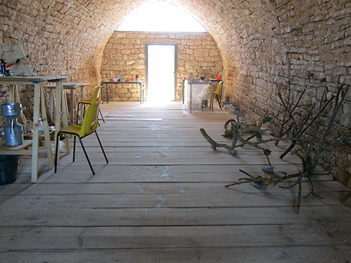

Vue de la résidence, Domaine des Boissets, photographie Sabrina Issa, 2020.
ACTE DE LA GREFFE, la transitivité
Le site de La Maison dans le ciel accueille en résidence de recherche et de création, théoriciens, artistes, scientifiques et ingénieurs autour d'une recherche collective, ayant comme point de départ l'acte de la greffe. Le collectif du LAAB - augmenté - travaille de façon pérenne sur le site, en procédant notamment à des greffes sur le pourtour de la résidence. Des interventions, conférences et propositions sonores ponctuent les temps de résidence et s'accompagne d'une exposition de la recherche ouverte au public sur six mois.
Dans une relecture au long cours de ce qui dure, fût ce à l'état de traces, nous nous proposons de travailler collectivement, ce qui demeure comme ce qui est. Apporter une attention sensible sur le site à la trace, afin de rendre possible, par le soin, un bien commun, l'émergence et la pérennisation de la forêt fruitière chère à Maurice Chaudière.
Notre démarche nous place dans une sorte de transition continue du sens, une situation ouverte et changeante. Nous sommes dans une approche de l'espace et des temporalités, où les échelles sont interrogées, où se mélangent les notions d'intériorité et d'extériorité, d'individus et de collectif, de règne biologique et minéral.
C'est à partir de ce projet réalisé en work in progress que nous rendrons visible à travers une édition, le travail réalisé au fils temps. L'édition sera ce supplément d'espace pouvant transmettre et redéployer la diversité de l'ensemble des propositions, éphémères ou appelées à vivre sur le site.
Vue d'atelier, Nicolas Bralet, fabrication de leurres, résidence de recherche et de création, le LAAB en collectif augmenté au Domaine des Boissets, Lozère, 2020.
Nicolas Bralet, prise de son, lauzes et autres calcaires, résidence de recherche et de création, le LAAB en collectif augmenté au Domaine des Boissets, Lozère, 2020.
L'épreuve du temps, mine de plomb sur papier carbone, Nicolas Bralet, résidence de recherche et de création, le LAAB en collectif augmenté au Domaine des Boissets, Lozère, 2020.
Distillation du lichen, réalisation d'hydrolats, Sabrina Issa, résidence de recherche et de création, le LAAB en collectif augmenté au Domaine des Boissets, Lozère, 2020.
Tirage issu de la série, La partie pour le tout, collages papier et technique mixtes (cyanotype, marbrures) de Nina Reumaux, résidence de recherche et de création, le LAAB en collectif augmenté au Domaine des Boissets, Lozère, 2020.
Coquelicot, photograhie UV réalisée avec un appareil dont le boitier a été défiltré pour y appliquer un filtre baader UV, Sabrina Issa, résidence de recherche et de création, le LAAB en collectif augmenté au Domaine des Boissets, Lozère, 2020.
Couleur du soleil, installation lumineuse, carte arduino et néons à LED programmable, François-David Collin, résidence de recherche et de création, le LAAB en collectif augmenté au Domaine des Boissets, Lozère, 2020.

Pollen de bruyère, Calluna vulgaris,photographie de pollens agrandis 2500x à partir de clichés produits par microscopie à balayage électronique, Philippe Obliger, résidence de recherche et de création, le LAAB en collectif augmenté au Domaine des Boissets, Lozère, 2020.
Pièce issue de la série, Hydres céramiques, polymère, bois, minéraux, dimensions variables, Samuel Aligand et Lydie Regnier, résidence de recherche et de création, le LAAB en collectif augmenté au Domaine des Boissets, Lozère, 2020.
Pièce issue de la série, Hydres céramiques, polymère, bois, minéraux, dimensions variables, Samuel Aligand et Lydie Regnier, résidence de recherche et de création, le LAAB en collectif augmenté au Domaine des Boissets, Lozère, 2020.
Sans-titre, matériaux variables, installation in situ, Philippe Brière, résidence de recherche et de création, le LAAB en collectif augmenté au Domaine des Boissets, Lozère, 2020.
Refuge végétal, bois, argile, terre, cire d'abeille à l'état brut, ruban à greffer, Delphine Chevrot, résidence de recherche et de création, le LAAB en collectif augmenté au Domaine des Boissets, Lozère, 2020.

Vue d'atelier, à gaucheRefuge végétal, bois, argile, terre, cire d'abeille à l'état brut, ruban à greffer, Delphine Chevrot, résidence de recherche et de création, le LAAB en collectif augmenté au Domaine des Boissets, Lozère, 2020.